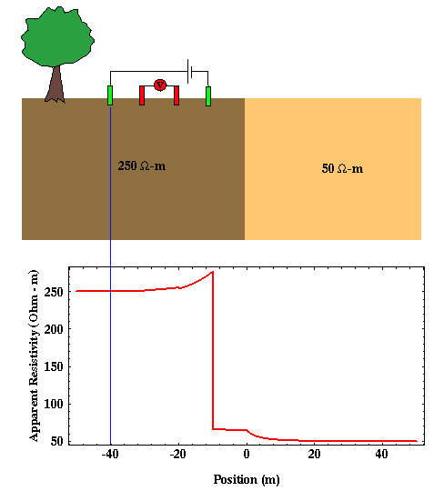

Resistivity Profiles
As was mentioned on the previous page, the data collected from resistivity soundings is usually interpretable only for horizontally stratified structures. If you are employing resistivity methods to find vertical structures, one would typically use resistivity profiles instead of resistivity soundings.
As described previously, resistivity profiles are resistivity surveys in which the electrode spacing is fixed for all readings. Apparent resistivity is computed for different electrode center points as the entire electrode spread is moved. Usually, the center point is moved along the line of the electrodes, although this does not have to be the case.
Shown below is geologic structure involving a vertical boundary between a higher resistivity material to the left and a lower resistivity material to the right. Below the geologic model is the apparent resisitivity you would observe using a Wenner array as the array is moved from left to right. Note that the distance shown along the bottom of this plot is the distance between the vertical fault and the current electrode farthest to the left of the array.

As you would expect, if the electrode array is far removed from the vertical fault, the measured apparent resistivity is equal to the resistivity of the underlying rock. As the array approaches the fault, the resistivity varies in a discontinuous fashion. That is, the change in resistivity with electrode position does not vary smoothly. The discontinuities in the resistivity profile correspond to array locations where electrodes move across the fault. The specifics of how the apparent resistivity varies as the electrode array moves across the fault depend on the type of array used. These notes will not contain a detailed discussion of these features of the apparent resistivity curve. Suffice it to say that using this profiling technique, vertical contrasts in resistivity can be identified.
How does one determine the electrode spacing to be used in a profile survey? If the vertical feature does not extend to the surface, the electrode spacing must be large enough to impart sufficient electrical current to depths below which the vertical contrast exists. Usually, electrical soundings will be performed well removed but on either side of the vertical structure that you wish to map. By examining the depth variation in resistivity interpreted from each of these soundings, an electrode spacing for the profile is determined.
Resistivity
- Current Flow and Ohm's Law pg 4
- The Fund. Electrical Property is Resistivity, NOT Resistance pg 5
- Resistivities for Common Earth Materialspg 6
- Current Density and Electric Fieldpg 7
- A First Estimate of Resistivitypg 8
- Current Flow From Two Closely Spaced Electrodespg 9
- A Practical Way of Measuring Resistivity pg 10
- Sources of Noise pg 11
- Depth of Current Penetration V.S. Current ElectrodeSpacing pg 12
- Current Flow in Layered Media pg 13
- Variation in Apparent Resistivity: Layered Versus Homogeneous Media pg 14
- Current Flow in Layered Media Versus Electrode Spacing pg 15
- A Second Example of Current Flow in Layered Mediapg 16